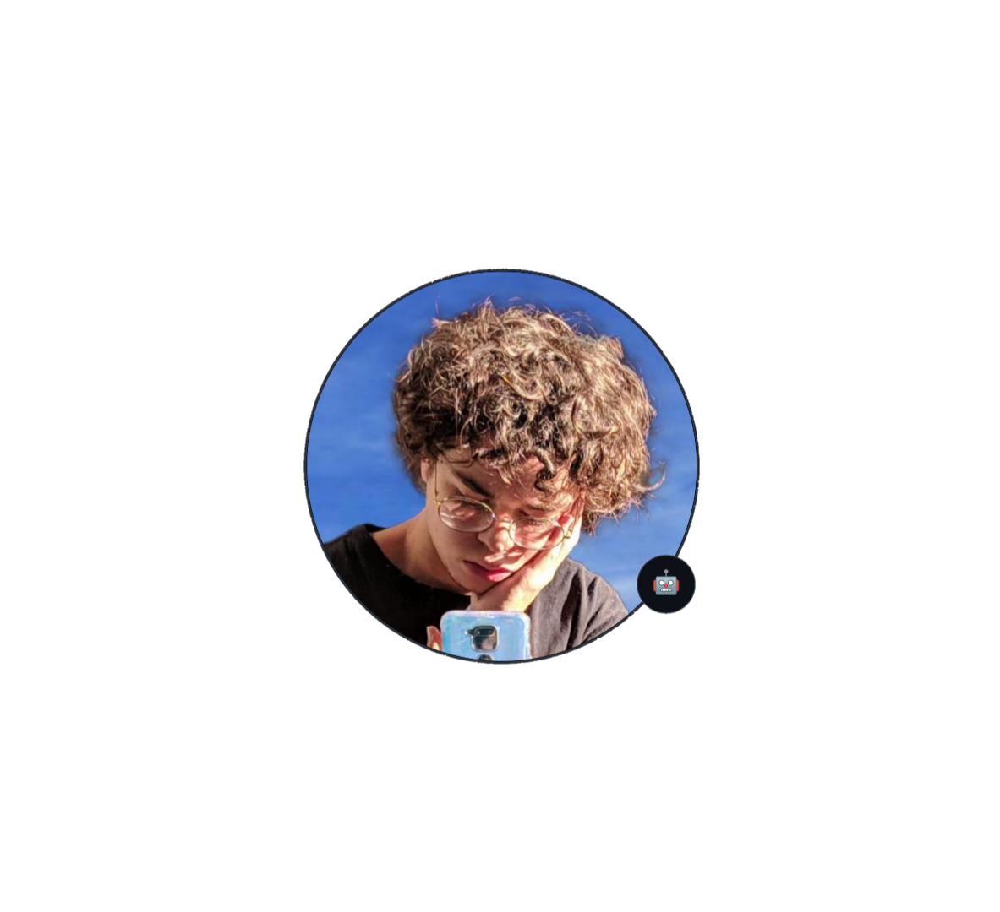

Sobre
tudo sobre mim como desenvolvidor
Meu nome é Gabriel Gomes, atualmente tenho 17 anos e praticamente acabei de ser introduzido ao mundo da computação e programação. Fazem 4/5 meses desde que comecei a estudar html, css, java, sistemas operacionais, redes e hardware no curso de desenvolvimento de sistemas do Senai - Jandira Professor Vicente Amato, venho aprendendo muito desde então e pretendo seguir carreira nessa área. Meu objetivo é sempre continuar estudando mesmo depois de conseguir um emprego relacionado para evoluir cada vez mais como profissional. Essa página foi criada nas aulas de LIMA com orientação do professor Leonid, apesar da criação dessa página possuo uma maior facilidade e apreço na área de back-end em programação.